User Research, User Interviews, Data Synthesis
and Analysis, Empathy, Ideation, Wireframing
and Prototyping, Usability Testing,
User Observations
Mission Statement:
Designed to minimize time spent on making
travel plans by customizing searches based
on the user's specified needs.
Overview
Problem:
Working traveler's struggle to find the information they need about potential travel
spots. Whether that's finding activities based on interests, looking at a location, or
looking at the cultural and historical significance of a place, busy travelers need a
faster and more efficient way to easily access this information.
Solution:
Dual Nature offers convenience by creating a site that personalizes travel research
searches based on the users' interests, hotel preferences and financial needs, making
it easier to book trips than ever before.
Target:
Dual Nature was designed around working travelers with limited free time to plan
for travel in their free time. Dual Nature focuses on travelers by personalizing their
searches based on their individual travel needs.
Main Features
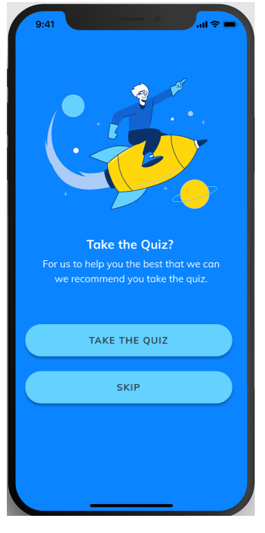
Personal Needs Quiz
Take the quiz to help the app
personalize searches based on
your individual travel needs.
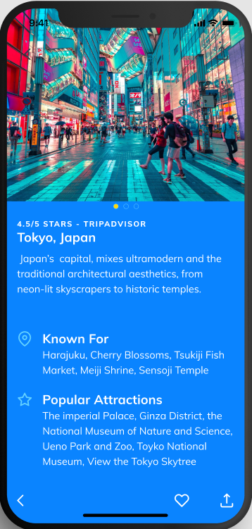
Location Information
Look for what different destinations
have to offer in activities and what
destinations are known for.
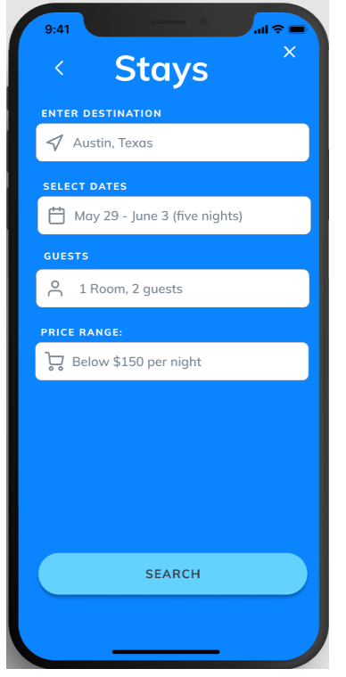
Stays Sarches
Find the amount of rooms you
need based on how many guests
you have traveling with you.
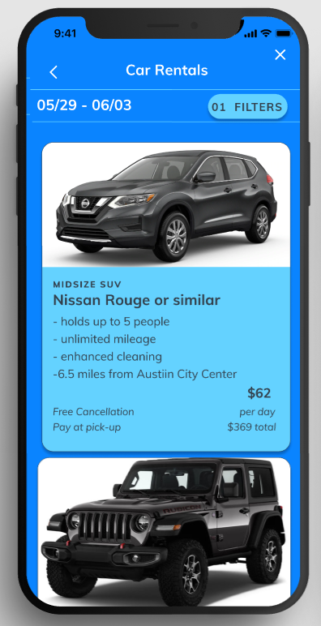
Rental Cars
Reserve rental cars as needed.
The app gives you multiple car
options so you can find one that
best suites your needs.
Things to Do
Find and reserve activities in the
place you are traveling to or look
up activities in a city you are
interested in traveling to.
Favorites
Add items you want to save
from your searches to your
favorites so you can
refer back to them later.
User Interviews:
I conducted 5 user interviews with people who planned their own travel trips.
I also talked to one person who did not have to plan their own trips on a consistent
basis to understand pain points they may have if they had to plan their own trip.
Pain Points:
Some key pain points the users stated were that filter systems did not work according
to their needs, hotels do not give you the option to look for suites with multiple rooms,
and information is not all in one place so research takes longer.
Goals:
Goals users had when planning for a trip were finding places with enough things to do,
staying on budget and finding stays that suite their needs (whether that be an Airbnb or
a hotel)
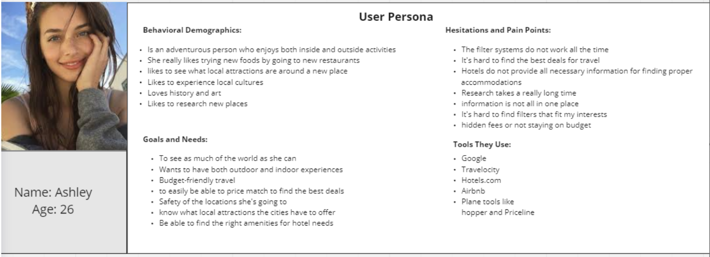
User Persona
Ashley is a young employee looking to take time off to travel. She wants to be able to find an easy
way to plan for her trips but the planning process is difficult. Some of her pain points are filter systems
not filtering out information correctly, and research for travel takes a longtime to do well.
Storyboard
Ashley is a young employee looking to take time off to travel. She wants to be able to find an easy
way to plan for her trips but the planning process is difficult. Some of her pain points are filter systems
not filtering out information correctly, and research for travel takes a longtime to do well.
Ideation
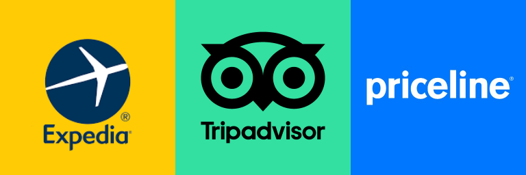
Competitor Analysis
When starting Ideation first looked at competitors websites to see what they were doing well as well as
what they could improve on. This helped me understand user pain points even more and allowed me to
start thinking of solutions to these pain points.
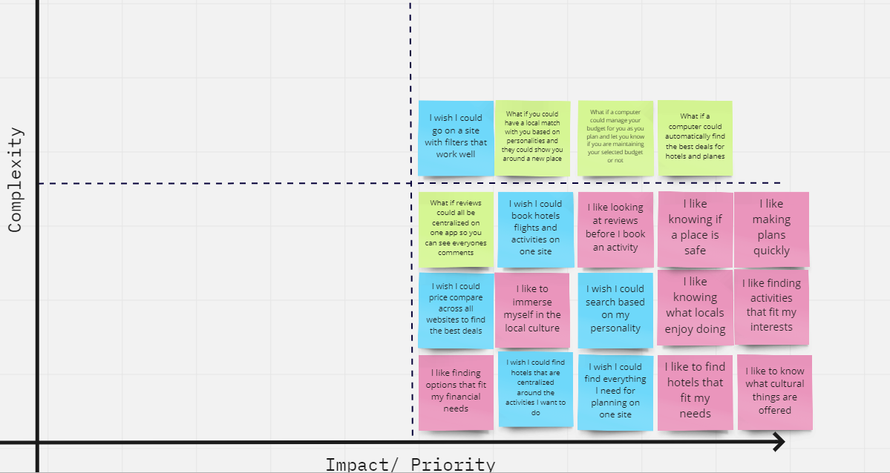
Prioritization Matrix
I had a lot of ideas of ways I could potentially solve user pain points after doing the competitor
analysis and brainstorming.In order to pick the features that would be most beneficial to the user
and the easiest to implement I put the ideas into a feature prioritization matrix.
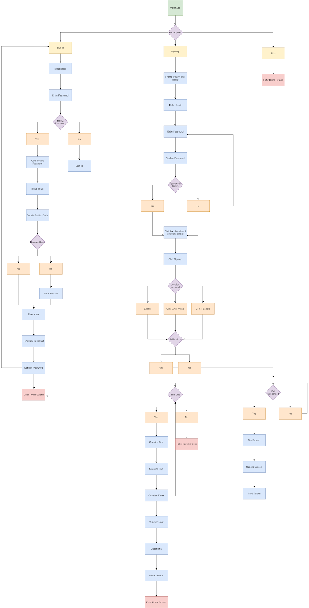
Onboarding User Flow: link
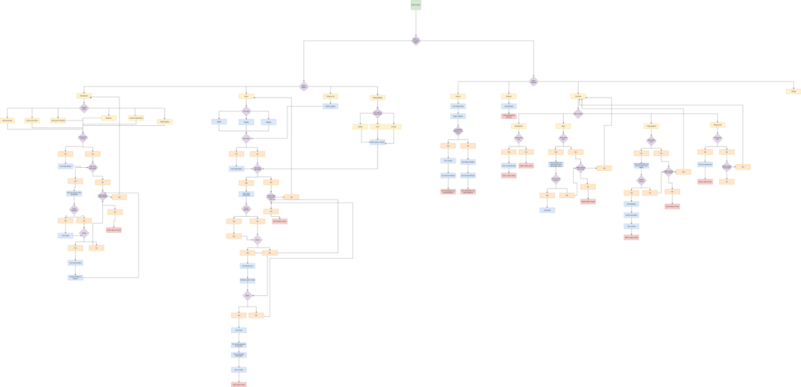
App Features User Flow: link
User Flows
After that I made a user flow to highlight how users would go about achieving various tasks
on the app. this top image shows the onboarding process while the bottom image shows in app
features such as looking up destinations or stays.
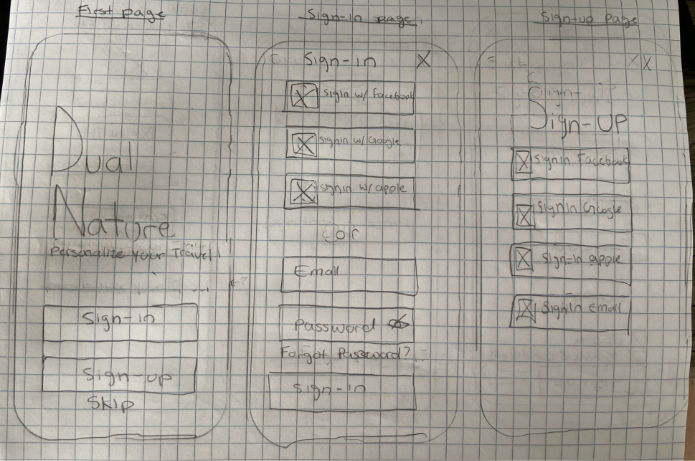
Sketches
The sketches focused on the onboarding process in the beginning. I wanted to make sure
that people first downloading the app would have an easy time being onboarded. The sketches above
are ideas I had on how to layout the sign-in and sign-up pages.
Wireframing and Low-Fidelity Prototype Testing
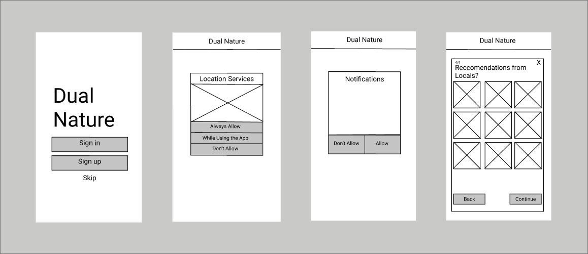
Wireframes
There were some iterations from the sketches to the digital wireframes. The focus was
to get the wireframes laid out well so the initial onboarding process could be as straight
forward and as easy as possible for users who are first using the app.
Usability Testing
I conducted 5 usability tests mostly over zoom because testers were either not local
or they were more comfortable meeting over zoom because of the pandemic.
Goals
My ultimate goal of this testing was to see if the onboarding was straight forward
and easy to get through.
Key Findings
Users wanted to be onboarded more than I initially thought. They were looking for
something to tell them about the key features of the app during the onboarding
process so they could have a better understanding of what the app's purpose was.
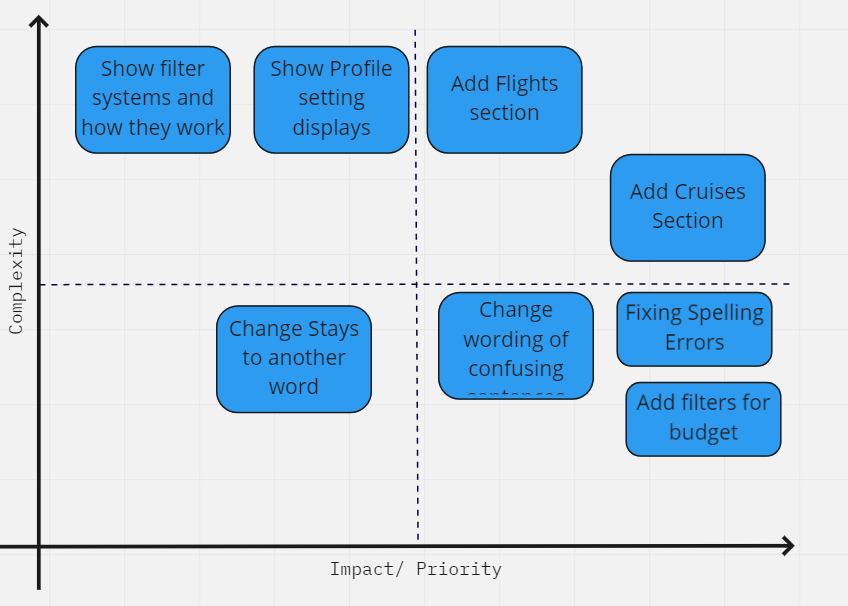
Prioritization Matrix
After I completed the Mid-Fidelity Prototype testing I put the key user insights
from usability testing into a matrix to determine what features I should include in the high-
fidelity prototype that were not already in the app. Some items were just simple fixes while
others were much more complex.
IOS Mockups
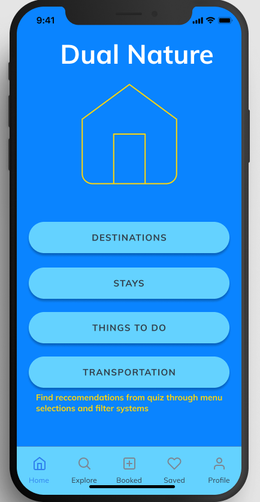
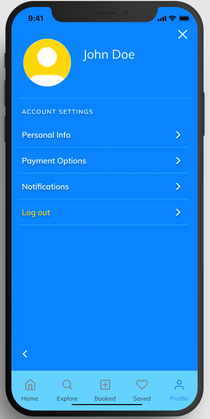
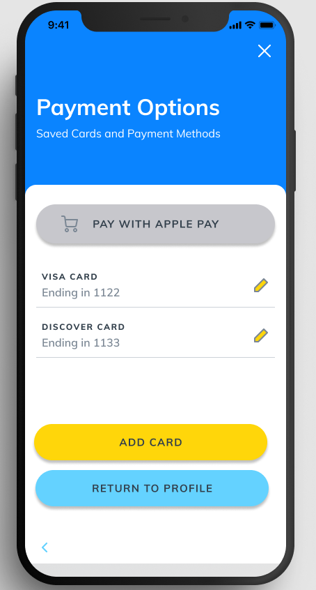
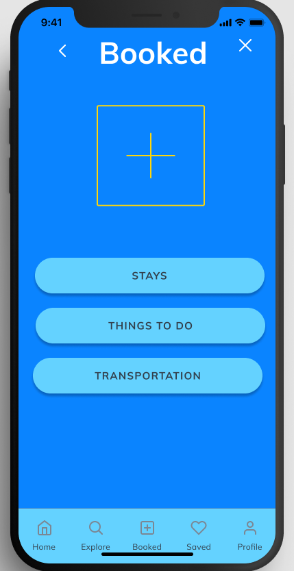
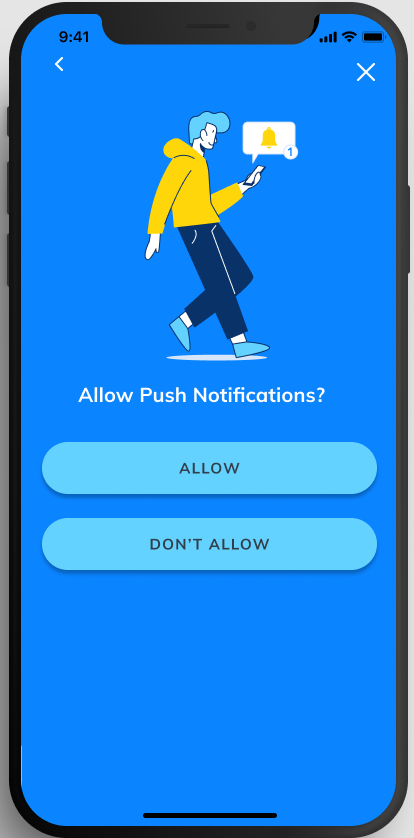
Final Thoughts and Conclusion
Leassons Learned
Focusing your design on the user needs is key, iterating your product is interesting
because your final product is nothing like the initial idea.
Do Better
I could have focused my idea more around the actual app sooner. I spent so much
time worrying about onboarding in the beginning, so I had to play catch up when
developing the app functionality and the layout.
Key Takeaways
Defining what your user needs is key, you have to compartmentalize what you think
someone wants to find out what they really need, user interviews help drive the process
of conceptualizing an app for your ideal users, iterating is so important so you can
consistently improve what you aremaking even if they are small things.